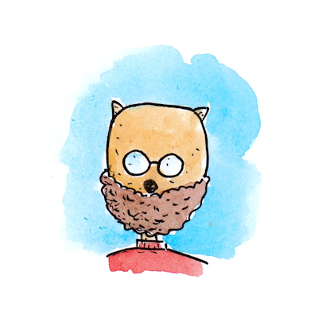
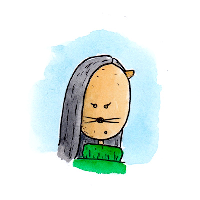

About

Marc Sommerhalder was born in Schaffhausen in 1981 and cried out loud at first. Later he calmed down and studied electrical engineering and cultural studies. Yes, this combination is strange. But never mind, because Marc loves to draw and illustrate comics and children's books anyway.

Valérie Bürgy writes the texts for Marc's drawings. She was born in 1979 in Freiburg i. Ue. and first travelled the world for several years. Later she studied cultural studies and public history and simply loves to tell stories of all kinds.
Marc and Valérie are also responsible for Schweinchen Hannes.